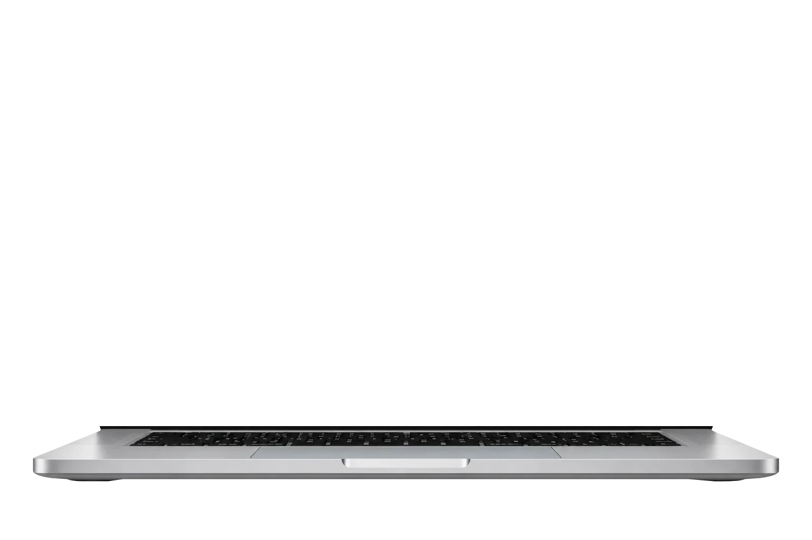
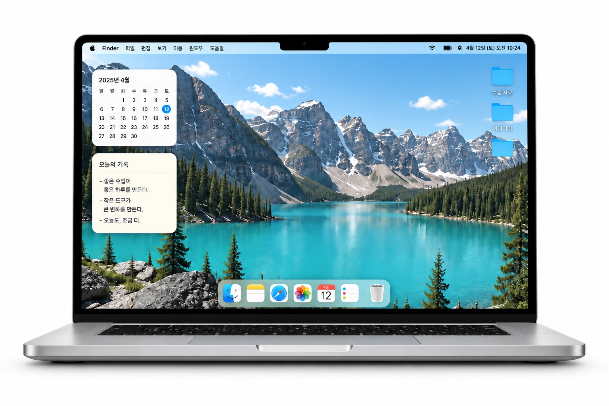
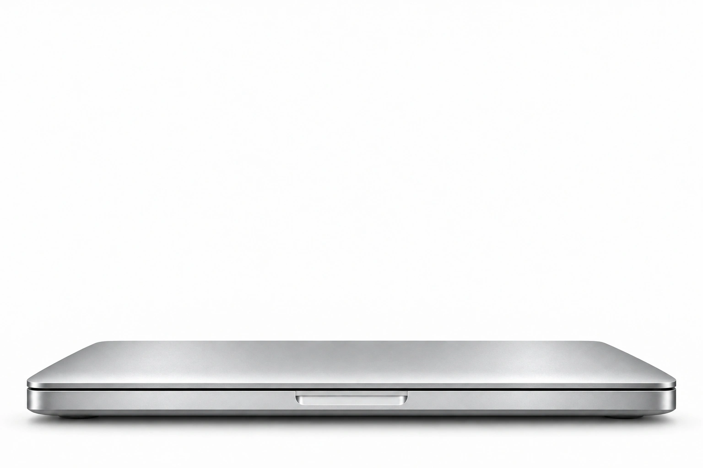

그림, 출제, 조판.한 창에서.
과학 시험지 편집기, 5E



01교과서 그림
어떤 그림도,
평가원 스타일로.
교과서에서 잘라 넣고 「변환하기」. 글자까지 고칠 수 있게 그려 드립니다.
저절로 보여 드리는 중 · 그림 위를 좌우로 끌어 보세요
02기출 그림
그림판은 넣어 두세요.
이젠 바로 고칠 수 있습니다.
그림 속 글자, 지우고 다시 쓸 필요 없습니다. 그 자리에서 바로 고치세요.
저절로 보여 드리는 중 · 그림 위를 좌우로 끌어 보세요
03그래프
이제는
살아있는 그래프를 쓰세요.
사진 속 그래프를 다시 그립니다. 숫자 하나 바꾸면 곡선이 따라옵니다.
저절로 보여 드리는 중 · 그림 위를 좌우로 끌어 보세요
04말로 그리기1.7.2
말로 그리세요.
시험용 그림이 됩니다.
그리고 싶은 그림을 말로 설명하면 평가원식 흑백 그림으로 그립니다. 마음에 안 드는 곳은 「여기 고쳐 줘」 한마디면 그 부분만. 물리부터 윤리까지.
저절로 과목을 돌며 보여 드리는 중 · 과목을 눌러 보세요
05문항 카드
선생님께서는
내용에만 신경 써 주세요.
쓰는 순간 옆에 한글 시험지가 그려집니다. 정답은 ○·×만 누르세요.
저절로 보여 드리는 중 · 그림 위를 좌우로 끌어 보세요
06기출 변형
낱말 하나로 검색.
버튼 하나로 수정.
찾고, 고르고, 「변형」. AI 없이 바로 내 문항이 됩니다.
저절로 보여 드리는 중 · 그림 위를 좌우로 끌어 보세요
07시험지 · 학교 양식
시험지를 넣기만 하면,
모든 문제가 내 양식으로.
학교 원안지 한글 파일만 올리세요. 머리 표부터 쪽 번호까지 그대로입니다.
저절로 보여 드리는 중 · 그림 위를 좌우로 끌어 보세요
08시험지 위에서
PDF → HWP 변환을
돈 주고 하세요?
5E는 한술 더 뜹니다.
옮기는 데서 끝나지 않습니다. 시험지 위 그림도 두 번 누르면 바로 고칩니다.
저절로 보여 드리는 중 · 그림 위를 좌우로 끌어 보세요
095E 클립보드
담고, 꺼내고.
세 프로그램 어디서든.
그림도, 그래프도, 문항도. ⌘C로 담아 두면 어디서든 꺼내 씁니다.
저절로 보여 드리는 중 · 그림 위를 좌우로 끌어 보세요
- 1.02026.07기출 그림 한 장에서 시작해 시험지 그림 하나를 끝까지 만드는 편집기
- 1.0.1 · 1.0.207곡선이 점을 지나감, 앱으로 설치 · 출시 전 정밀 감사
- 1.1 – 1.307원본을 옆에 띄워 놓고 그리기 · 그래프에 점·화살표·이름표 · 용수철·도르래 같은 과학 부품
- 1.407물리·화학·생명·지구 네 과목 부품 완성, 밖에서 가져온 그림을 흑백 선화로
- 1.508라이브러리·AI 작업대·편집기를 한 흐름으로, Windows 설치판
- 1.5.6 · 1.5.808교과서 PDF 검색·크롭, AI 그래프 통합
- 1.609어떤 그림이든 시험용 그림으로 — 크롭 → AI 변환 → 라벨
- 1.6.1 – 1.6.310.07웹 정비 — 배포 경로 정리, 라이브러리 미리보기 반응·즉시 표시
- 1.711그림 도구에서 출제 도구로 — 문항 카드, 기출 변형, 학교 양식 조판, 한글 없이 인쇄까지
- 1.7.1덜어내기 — 새 기능 없이 구조를 정리하고 버그를 잡습니다
- 1.8없는 그림도 — 설명만으로 그림·그래프를 만듭니다
- 1.9대화로 출제 — 방향을 말하면 시안, 고치고, 실제 문항까지
- 2.02027.03 전구상 · 그림 · 조판 · 검토 · 이의 제기 대응까지, 출제의 처음부터 끝까지 5E 안에서